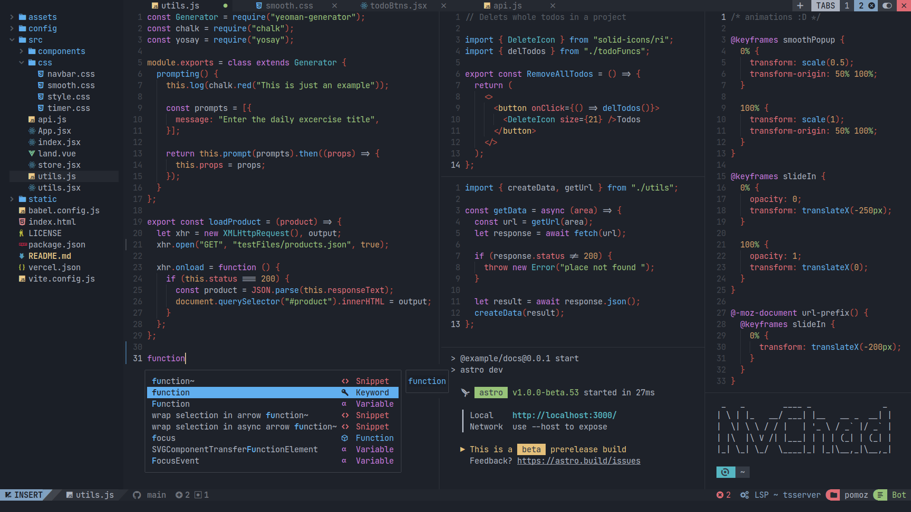

diode
A full-featured editor where all you have is a terminal. Non-modal, with familiar keybindings and language support — no environment to install or configure.

01 / NON-MODAL EDITING
The editing model you already know: no modes, standard keybindings, multiple cursors, mouse support. Nothing to relearn.
02 / LANGUAGE SUPPORT
LSP: completion, go to definition, diagnostics, rename. TypeScript and JavaScript are built in; other languages install from the extension store.
03 / VS CODE EXTENSIONS
Language and tooling extensions for VS Code run as-is; the store proxies Open VSX. The goal is full API support wherever a terminal makes it possible — webviews are out. See the API coverage matrix.
04 / BUILT-IN TOOLS
File tree, project-wide search, git with diffs and a commit graph, an integrated terminal, a diagnostics panel.
05 / A SINGLE BINARY
One-command install, no dependencies, no configuration. Starts in ~100 ms. Works over ssh, in containers, on servers without a GUI. Numbers are in the benchmarks.